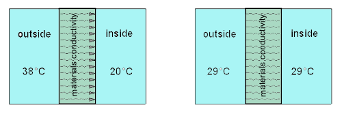
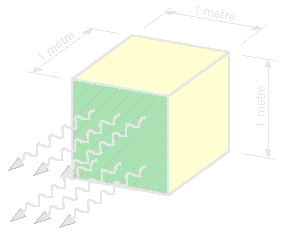
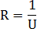
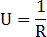
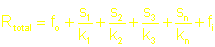
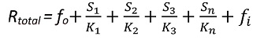
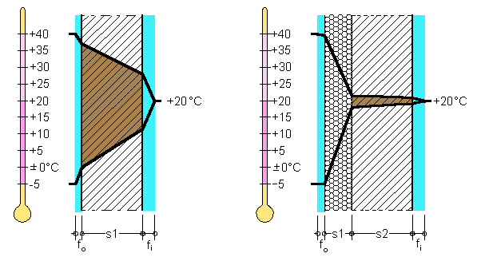

General thermal requirements
| Heat flow | Thermal conductance | Thermal conductivity | Thermal resistance |
The First Law of Thermodynamics is the low of conservation of energy. The second law states that heat flows form hotter body to a cooler body. The easiest way to conserve energy would be to accept a lower temperature inside in winter and a higher temperature in summer. People should be encouraged to wear warmer clothes in winter to safe on heating costs. Cooling costs in summer could be reduce by accepting an inside temperature adjusted to the outside temperature. If we accept a temperature range from 22°C to 26°C related to the outside temperature the cooling cost would be much less.
Conductivity and thermal resistance
As show in Figure 1 heat will flow through a building material until equilibrium is reached (Law of Thermodynamics). The heat travels trough the material by conductivity. The thermal conductance (C) is measured in W/m²×°C.
Figure 1
[top]
Thermal conductance
|

|
Consider a building material where the temperature difference between to parallel faces one metre apart is 1°C. If the heat flows at a rate of 1 Watt per square metre through this one metre thickness, the material has a thermal conductivity of 1 W/m²×°C (1 Watt per metre thickness
per 1°C) |
[top]
Thermal conductivity
Table 1*
| Concrete |
1.440
|
Plaster (cement) |
0.650
|
| Clay brick |
1.100
|
Polystyrene |
0.036
|
| Glass |
0.700
|
Polyurethane foam |
0.025
|
| Glass fibre (batts) |
0.042
|
Softwood |
0.110
|
| Hardwood |
0.190
|
Steel |
50.000
|
| Motionless dry air |
0.023
|
Water |
0.600
|
and vary; depending on the source.)
[top]
Thermal resistance
|  &  |

k = thermal conductivity
|
The total thermal resistance (R) of a given building element can be calculated
by adding each single element (material) together as shown in the formula
below:
|
| Standard Formula  |
|
fo
= external surface resistance fi = internal surface resistance k = conductivity of material s = material thickness in metres |
fi = 0.12 to 0.15
| a) Wall 1 | 200 mm concrete wall |
| b) Wall 2 | 200 mm concrete
wall with a 100 mm polystyrene insulation. |
| The total thermal resistance (R) of a given building element can be calculated by adding each single element (material) together as shown in the formula below:  fo = external surface resistance fi = internal surface resistance k = conductivity of material s = material thickness in metres |
|  (a) (b) |
The diagrams above are vertical slices through exterior walls. Figure 3 (b) shows how the position of the external insulation helps to keep the wall structure and interior surfaces warm. The range of the outdoor air temperature in (a) and (b) is 45°C (-5°C Winter and +40°C Summer) and the indoor air temperature is kept constant at 20°C (Summer and Winter). The thick solid diagonal lines show the temperature within the wall at various points. Note the warmth of the wall structure in (b); it's the external insulation at work.
[top]